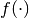
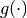
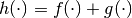
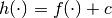
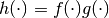
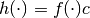
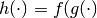
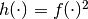
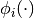

Maps¶
The purpose of the best.maps module is to define generic manner the concept of a multi-input/output function. Our goal is to have function objects that can be combined easily in arbitrary ways to create new functions. The complete details of the implementation can be found in the docstrings.
The basic concepts¶
We will say that an object is a regular multi-input/output function if it is a common python function that accepts as input a unique numpy array and returns a unique numpy array. For example:
def f(x):
assert isinstance(x, np.ndarray)
assert len(x.shape) == 1
return x + x
is a regular multi-input/output function.
However, we will give a stronger definition for what we are going to call a, simply, a multi-input/output function. So, by a multi-input/output function we refer to any object that inherits from the class best.maps.Function. best.maps.Functions have be designed with the following points in mind:
- It needs to know the number of input/output dimensions.
- It needs to have a name.
- It should have a user-friendly string representation.
- It can represent a regular multi-input/output function as defined above.
- If the dimensions of two multi-input/output functions are compatible, then it should be easy to combine them in order to construct linear combinations of them.
The most important idea is that anything in Best that can be thought as such a map, must be a child of best.maps.Function.
The best.maps.Function class.¶
We will not dwelve into the implementational details of best.maps.Function. Our goal here is to document its functions that should/could be overloaded by its children and then demonstrate by a simple example what is the functionality it actually provides.
- class best.maps.Function¶
Inherits : best.Object A class representing an arbitrary multi-input/output function.
Everything in Best that can be though as such a function should be a child of this class.
- __init__(num_input, num_output[, num_hyp=0[, hyp=None[, name="function"[, f_wrapped=None]]]])¶
Initializes the object.
You do not have to overload this method. However, if you choose to do so, keep in mind that children of this class should call this constructor providing at least the first two arguments. This can be achieved with the following code:
class MyFunction(best.maps.Function): def __init__(self): # Assuming here that we now the number of inputs and # outputs of the function (as well as its name). super(MyName, self).__init__(10, 24, name='Super Function')
Parameters: - num_input (int) – The number of input dimensions.
- num_output (int) – The number of output dimensions.
- num_hyp (int) – The number of hyper-parameters of the function. Zero by default.
- hyp (1D numpy array) – The hyper-parameters of the function. If None they are left unspecified and must be provided when calling it.
- name (str) – A name for the function you create.
- f_wrapped (A normal python function that is a multi-input/output function.) – If specified, then this function is simply a f_wrapped.
You would typically use the last option, in order to construct a best.maps.Function out of an existing regular multi-input/output function. Assuming you have a function f() (as the one we defined above), then here is how you can actually do it:
F = best.maps.Functions(10, 20, f_wrapped=f)
where, of course, we have assumed that f() accepts a numpy array with 10 dimensions and response with one with 20.
- num_input¶
Get the number of input dimensions.
It cannot be changed directly.
- num_output¶
Get the number of output dimensions.
It cannot be changed directly.
- num_hyp¶
The number of hyper-parameters.
- hyp¶
Get/Set the hyper-parameters.
- f_wrapped¶
Get the wrapped function (if any).
It cannot be changed directly.
- is_function_wrapper¶
True if the object is a function wrapper, False otherwise.
- _eval(x, hyp):
Evaluate the function at x assuming that x has the right dimensions.
Note
This must be re-implemented by children.
Parameters: - x (1D numpy array of the right dimensions) – The evaluation point.
- hyp (1D numpy array.) – The hyper-parameters. Ignore it if your function does not have any.
Returns: The result.
Return type: 1D numpy array of the right dimensions or just a float
Etype : NotImplementedError
- __call__(x[, hyp=None]):
Evaluate the function x.
Note
This calls best.maps.Function._eval().
Parameters: - x (Can be a multi-dimensional numpy array whose last dimension corresponds to the number of inputs while the rest simply correspond to different evaluation points.) – The evaluation point(s).
- hyp (1D numpy array.) – The hyper-parameters. Ignore it if your function does not have any.
Returns y: The result.
Return type: a numpy array of the right dimensions.
- _d_eval(x, hyp):
Evaluate the Jacobian of the function at x. The dimensions of the Jacobian are num_output x num_input.
Note
This must be re-implemented by children.
Parameters: - x (1D numpy array of the right dimensions) – The evaluation point.
- hyp (1D numpy array.) – The hyper-parameters. Ignore it if your function does not have any.
Returns: The Jacobian at x.
Return type: 2D numpy array of the right dimensions
- d(x[, hyp=None])¶
Evaluate the Jacobian of the function at x.
Note
This calls best.maps.Function._d_eval().
Parameters: - x (Can be a multi-dimensional numpy array whose last dimension corresponds to the number of inputs while the rest simply correspond to different evaluation points.) – The evaluation point(s).
- hyp (1D numpy array.) – The hyper-parameters. Ignore it if your function does not have any.
Returns y: The result.
Return type: a numpy array of the right dimensions.
- d_hyp(x[, hyp=None])¶
Evaluate the Jacobian of the function at x with respect to the hyper-parameters.
Note
This calls best.maps.Function._d_hyp_eval().
Parameters: - x (Can be a multi-dimensional numpy array whose last dimension corresponds to the number of inputs while the rest simply correspond to different evaluation points.) – The evaluation point(s).
- hyp (1D numpy array.) – The hyper-parameters. Ignore it if your function does not have any.
Returns y: The result.
Return type: a numpy array of the right dimensions.
- __add__(g):
Add two functions.
Parameters: g (best.maps.Function object, regular multi-input/output function or just a number.) – A function to be added to the current object. Returns: A function object that represents the addition of the current object and g. Return type: best.maps.Function
- __mul__(g):
Multiply two functions.
Parameters: g (best.maps.Function object, regular multi-input/output function or just a number.) – A function to be multiplied with the current object. Returns: A function object that represents the multiplication of the current object and g. Return type: best.maps.Function
- compose(g):
Compose two functions.
Parameters: g (best.maps.Function) – A function whose output has the same dimensions as the input of the current object. Returns: A function object that represents the composition of the current object and g. Return type: best.maps.Function
- join(g):
Joins the outputs of two functions.
Parameters: g (best.maps.Function) – A function whose output has the same dimensions as the input of the current object. Returns: A function object that represents jointly the outputs of the current object and g (fist f then g). Return type: best.maps.Function
- screen([in_idx=None[, out_idx=None[, default_inputs=None[, name='Screened Function']]]])¶
Creates a screened version of the function.
The parameters are as in the constructor of best.maps.FunctionScreened. You may consult it for details.
- _to_string(pad):
Overloads : best.Object._to_string()
Some Examples¶
The first example we consider is creating a best.maps.Function wrapper of a regular multi-input/output function:
import best.maps
def f(x):
return x + x
ff = best.maps.Function(10, 10, name='foo', f_wrapped=f)
print str(ff)
x = np.random.randn(10)
print 'Eval at', x
print ff(x)
If you wish, you may create a new class that inherits best.maps.Function. You are required to overload best.maps.Function.__call__():
from best.maps import Function
class MyFunction(Function):
def __call__(self, x):
return x ** 2
Now, assume that we have two functions with the same number of inputs
and outputs  and . Let also  be any floating point number. You may now define several functions:
be any floating point number. You may now define several functions:
Sum of functions :
h = f + gSum of function with a constant :
h = f + c
Note: The constant must always be on the right side of the operator. Product of functions :
h = f * gProduct of function with a constant :
h = f * c
Note: The constant must always be on the right side of the operator.
Assume that the two functions have compatible dimensions so that they can be composed (e.g., the number of outputs of is the same as the number of inputs of . Then, you can define  by:
from best.maps import FunctionComposition
h = FunctionComposition((f, g))
It is also possible to raise a function to a particular power. For example, the following code defines :
from best.maps import FunctionPower
h = FunctionPower(f, 2.)
Screened Function¶
A very useful class is the best.maps.FunctionScreened. It implements a screened version of another class. We give a brief discreption of its functionality.
- class best.maps.FunctionScreened¶
Inherits : best.maps.Function A function that serves as a screened version of another function.
It is useful in applications when you want to fix certain inputs to given values and play with the rest and/or if you want to screen certain outputs. It is one of the basic building blocks for representing the High-Dimensional Representation (HDMR) of a function.
- __init__(screened_function[, in_idx=None[, default_inputs=None[, out_idx=None[, name='Screened Function']]]])¶
Initialize the object.
Parameters: - screened_func (best.maps.Function) – The function to be screened.
- in_idx (tuple, list or NoneType) – The input indices that are not screened. It must be a valid container. If None, then no inputs are screened. If a non-empty list is suplied, then the argument default_inputs must be suplied.
- default_inputs (1D numpy array) – If in_idx is not None, then this can be suplied. It is a default set of inputs of the same size as the original input of the screened_func. If it is not given, then it is automatically set to zero. These values will be used to fill in the missing values of the screened inputs.
- out_idx (tuple, list or NoneType) – The output indices that are not screened. If None, then no output is screened.
- name (str) – A name for the function.
- __call__(x[, hyp=None])¶
Overloads : best.maps.Function.__call__()
- d(x[, hyp=None])¶
Overloads : best.maps.Function.d()
- d_hyp(x[, hyp=None])¶
Overloads : best.maps.Function.d_hyp()
Let us give a simple example of how it is to be used. Suppose that you have a function that takes 10 inputs and responds with 10 outputs. Assume that you wish to fix all the inputs to 0.5 with the exception of the first one and the fifth one and that you only want to look at the fourth and the sixth outputs. Here is how you can achieve this using the best.maps.FunctionScreened:
from best.maps import FunctionScreened
h = FunctionScreened(f, in_idx=[0, 4],
default_inputs=np.ones(f.num_input) * .5,
out_idx=[[3, 5]])
print 'Evaluate h at x = [0.3, -1.]:'
print h(np.array([0.3, -1.]))
print 'It should be equivalent to evaluating: '
x_full = np.ones(f.num_input) * .5
x_full[[0, 4]] = np.array([0.3, -1.])
print f(x_full)[[3, 5]]
Basis¶
A basis is simply a collection of multi-input functions . Therefore, it can be represented by a child of best.maps.Function. We offer several basis functions. In particular, Orthogonal Polynomials can be constructed using the functionality of best.gpc. Furthermore, bases can be constructed from Radial Basis Functions using best.maps.RadialBasisFunction.to_basis(). You should go through the corresponding documentation. Here, we will simply state a few examples that exploit the functionality of best.maps.
Joining two bases¶
Assume that we are given two bases, say phi and psi. We can create a basis that contains the bases functions of phi and psi simultaneously by using the function best.maps.Function.join():
phipsi = phi.join(psi)
print str(phipsi)
Getting rid of some of the basis functions¶
Now, assume that we are given a basis phi and that we want to construct an other one that contains only the first and the fifth basis functions of phi. We can do this as follows:
sparse_phi = phi.screen(out_idx=[0, 2])
print str(sparse_phi)